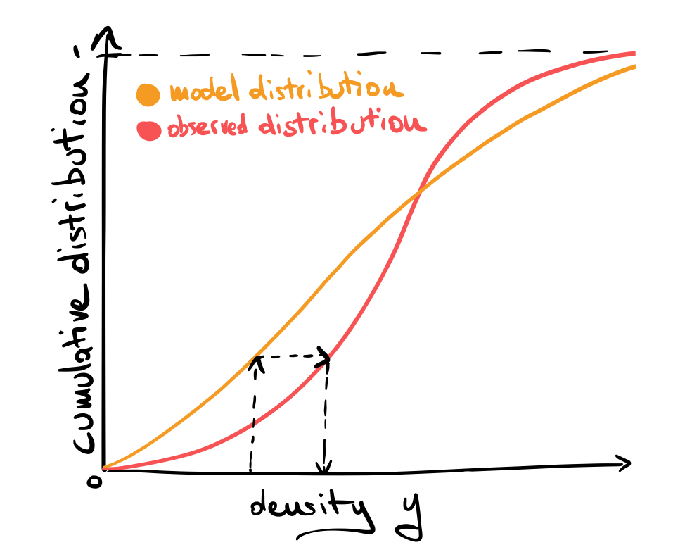
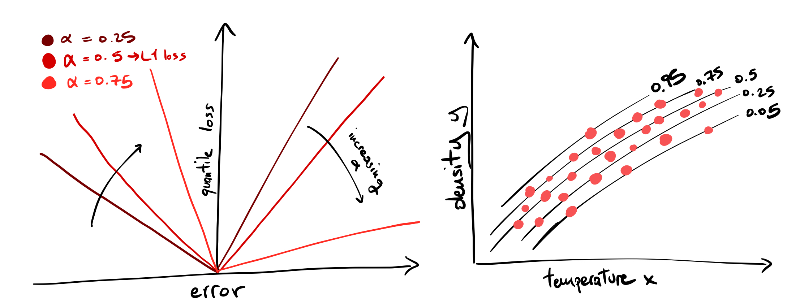

Differentiable Quantile Matching via Boosted Decision Trees
The world is complicated, and for any rule, there is an exception. Models can be used to navigate the complexity of natural phenomena. Understanding when a model fails is of fundamental importance, as it defines the limits of our explanatory powers and it suggests how to improve our understanding of the phenomena under consideration.
Sometimes, however, the model is inconsistent with observations for really "boring" reasons. For example, imagine an experimental apparatus that measures the density of a liquid and whose performance depends on the daily variation of the temperature in the room. We are not interested in what caused these variations. We don't want to develop a detailed model of this effect. We just want to correct the predictions of our original model to be consistent with the observed data. In this case, scientists use the term "calibration" to define a set of methods and techniques for correcting the model's projections to match real-world data.
Quantile Matching
A popular and powerful technique for calibration is called quantile matching (or quantile mapping), which is a generic method to map one probability distribution to another by matching their quantiles. For an intuitive explanation see the following figure:

Given a specific value of our measured density \(y\), we read the value of the cumulative distribution function for the model (model quantile) and then substitute the value of the same quantile in the observed distribution, then repeat this substitution for all data points.
The problem becomes a bit more complicated when we introduce a dependency on a control variable \(x\), i.e., the temperature in the problem above.
The output of our model (experiment) can then be formulated via a conditional probability distribution \(P_m(y|x)\) (\(P_e(y|x)\)) which depends on the temperature \(x\). We are looking for a consistent way to map \(P_m(y|x)\) to \(P_e(y|x)\) to match the model's prediction.
When both the input variable \(x\) and the output variables \(y\) are multidimensional, this procedure however breaks down. This is where quantile regression comes into play.
Quantile Regression
When you minimize the least squares loss \(L_2(\theta)= \langle (y-f_\theta(x))^2 \rangle\) you are looking for a model \(f_\theta\) parametrized by \(\theta\) that reproduces the mean of the distribution of \(y\). With the L1 loss \(L_1 (\theta) = \langle |y-f_\theta(x)| \rangle\), you fit its median (the 0.5 quantile). The quantile loss, which looks like a tilted L1 loss, allows you to fit any quantile of the distribution. See figure and this post:

We can fit as many quantiles of the distribution as we want, one at a time. An easy and powerful method to perform this fitting is boosted decision trees (BDTs). BDTs are great: they are reliable yet flexible models that can well approximate multidimensional functions, a must-have tool for any novice data scientist to approach the complexity of real-world data.
In order to fit our BDTs we need however data. The experimental data is already there and we can use it to infer the quantiles of \(P_e(y|x)\). Deriving the quantiles of the model is a bit more complicated since, even with simple models, an analytical description for the quantiles is intractable. To circumvent this problem we can generate data by performing simulation from the model (sampling from \(P_m(y|x)\)) and infer a BDT on this generated data.
We now possess all the tools to map our model predictions to data differentiably with quantile matching:
- infer \(N\) models \(f^\alpha_m\) and \(f^\alpha_e\) indexed by \(\alpha=1/N,1/(N-1),\dots,1\) on simulated and experimental data.
- for all \(j\) pairs of simulated data \((x_j,y_j)_m\) find the closest \(\tilde{\alpha}\) such that \(f^{\tilde{\alpha}}_m(x_j)\sim y_j\) and substitute the new value from the inferred experimental distribution \(\tilde{y}_j=f^{\tilde{\alpha}}_e(x_j)\)
And you are done: the resulting set \(\{(x_j,\tilde{y}_j)\}_m\) should match your experimental data.